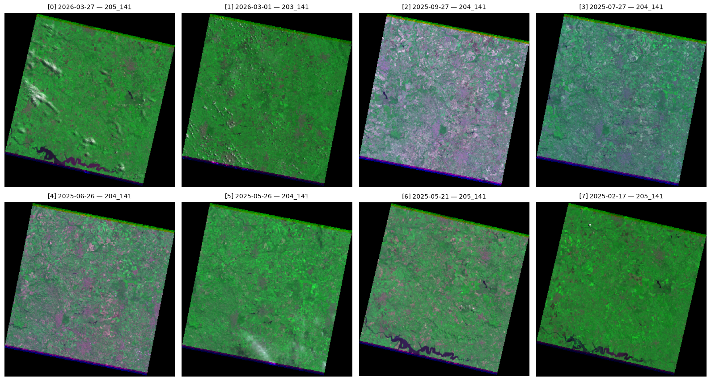
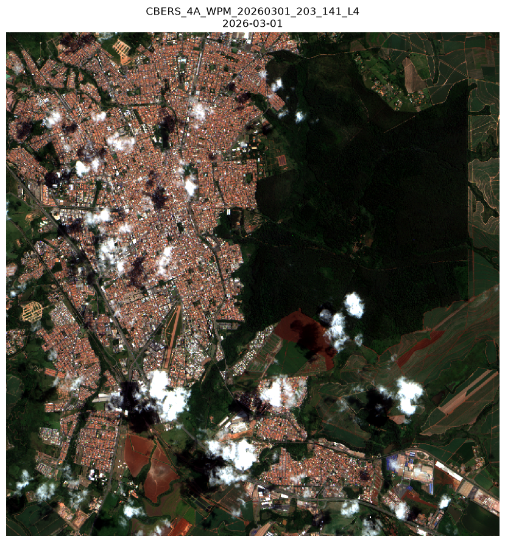
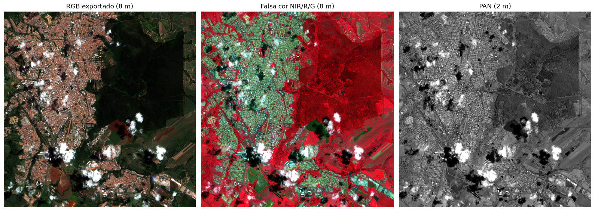

Aula 00 — Aquisição da imagem CBERS-4A/WPM via STAC
Buscar, escolher, pré-visualizar e exportar as bandas do CBERS-4A/WPM a partir do STAC do INPE (Brazil Data Cube), coleção CB4A-WPM-L4-DN-1. Ao final, os GeoTIFFs ficam em data/raw, prontos para a Aula 01 (correção TOA/BOA).
Rode local com
pixi run lab(recomendado) ou no Google Colab. A primeira célula de código cuida da instalação quando você está no Colab.
| asset | banda | faixa espectral | resolução |
|---|---|---|---|
BAND0 |
PAN | 0,45–0,90 µm | 2 m |
BAND1 |
Blue | 0,45–0,52 µm | 8 m |
BAND2 |
Green | 0,52–0,59 µm | 8 m |
BAND3 |
Red | 0,63–0,69 µm | 8 m |
BAND4 |
NIR | 0,77–0,89 µm | 8 m |
L4-DN = ortorretificado, em números digitais (int16, nodata = 0), sem correção atmosférica.
Duas particularidades desta coleção: (1) não há metadado de nuvem — escolhemos a cena pela miniatura e por um diagnóstico calculado na própria AOI; (2) os arquivos não são COG, então o custo do recorte cresce com a altura da AOI. Comece com uma AOI pequena (5–10 km).
In [1]:
0. Configuração e imports
In [2]:
import os
# ajustes de GDAL para leitura remota (defina ANTES de importar o rasterio)
os.environ.setdefault("GDAL_DISABLE_READDIR_ON_OPEN", "EMPTY_DIR") # evita listar o diretório remoto
os.environ.setdefault("GDAL_HTTP_MAX_RETRY", "5") # a API do INPE às vezes derruba a conexão
os.environ.setdefault("GDAL_HTTP_RETRY_DELAY", "2")
os.environ.setdefault("GDAL_CACHEMAX", "512") # MB de cache de blocos
from io import BytesIO
import numpy as np
import pandas as pd
import matplotlib.pyplot as plt
import rasterio
import requests
from pystac_client import Client
from pyproj import Transformer
from rasterio.windows import Window, from_bounds
from rasterio.windows import transform as window_transform
STAC_URL = "https://data.inpe.br/bdc/stac/v1/"
COLLECTION = "CB4A-WPM-L4-DN-1"
# asset do STAC -> apelido usado nos arquivos de saída
BANDAS = {
"BAND1": "blue",
"BAND2": "green",
"BAND3": "red",
"BAND4": "nir",
"BAND0": "pan",
}
# Local (pixi): cai direto na pasta que a Aula 01 le.
# No Colab, troque por um caminho no seu Drive (apos montar o Drive),
# ex.: OUTPUT_DIR = "/content/drive/MyDrive/geoproc/data/raw"
OUTPUT_DIR = "data/raw"
os.makedirs(OUTPUT_DIR, exist_ok=True)
client = Client.open(STAC_URL)
client1. Definindo a AOI
Duas opções: um bbox manual (mais simples) ou a geometria de um município via geobr. Use o bbox finder para pegar as coordenadas.
O bbox é sempre [oeste, sul, leste, norte] em graus (EPSG:4326).
Comece pequeno. Como os arquivos não são COG, o custo da leitura cresce com a altura da AOI: um recorte de ~0,04° (≈ 4 km) resolve para experimentar; depois você aumenta.
In [3]:
# ---- opção A: bbox na mão ----
AOI_BBOX = [-47.596712, -22.467523, -47.495068, -22.374216]
AOI_NOME = "rio_claro"
# # ---- opção B: município inteiro via geobr (descomente — cuidado, fica bem mais lento) ----
# import geobr
# import unicodedata
# muni = geobr.read_conservation_units(date=202503)
# print(muni.nome_uc)
# termo = normalizar("cipó")
# selecionadas = muni[
# muni["nome_uc"].map(normalizar).str.contains(termo, na=False, regex=False)
# ]
# if selecionadas.empty:
# raise ValueError("Nenhuma unidade de conservação contendo 'cipó' foi encontrada.")
# alvo = selecionadas.iloc[0]
# nome_alvo = alvo["nome_uc"]
# AOI_BBOX = list(alvo.geometry.bounds)
# AOI_NOME = "serra_do_cipo"
# print(f"Unidade selecionada: {nome_alvo}")
# AOI_BBOX = list(alvo.geometry.bounds)
# AOI_NOME = "rio_claro"
largura_km = (AOI_BBOX[2] - AOI_BBOX[0]) * 111 * np.cos(np.radians(AOI_BBOX[1]))
altura_km = (AOI_BBOX[3] - AOI_BBOX[1]) * 111
print(f"AOI: {AOI_BBOX}")
print(f"tamanho aproximado: {largura_km:.1f} x {altura_km:.1f} km")
print(f"pixels estimados: MS {largura_km * 125:.0f} x {altura_km * 125:.0f} | "
f"PAN {largura_km * 500:.0f} x {altura_km * 500:.0f}")AOI: [-47.596712, -22.467523, -47.495068, -22.374216]
tamanho aproximado: 10.4 x 10.4 km
pixels estimados: MS 1303 x 1295 | PAN 5213 x 5179In [4]:
# visualização rápida da AOI (opcional)
import folium
from shapely.geometry import box
m = folium.Map()
folium.GeoJson(box(*AOI_BBOX).__geo_interface__,
style_function=lambda x: {"fillColor": "none", "color": "red", "weight": 3}).add_to(m)
m.fit_bounds([[AOI_BBOX[1], AOI_BBOX[0]], [AOI_BBOX[3], AOI_BBOX[2]]])
m2. Buscando as cenas
A busca por bbox retorna toda cena cujo footprint cruza a AOI — inclusive as que só encostam em uma quina e cobrem a sua área só com nodata. Por isso a tabela tem a coluna orbita_ponto: cenas de órbitas diferentes cobrem partes diferentes (e, como veremos, chegam até em zonas UTM diferentes).
In [5]:
def buscar_cenas(bbox, datetime_range, collection=COLLECTION, limite=None):
"""Busca cenas no STAC e devolve (lista_de_items, DataFrame com o resumo)."""
busca = client.search(
collections=[collection],
bbox=bbox,
datetime=datetime_range,
max_items=limite,
)
items = list(busca.items())
linhas = []
for i, item in enumerate(items):
props = item.properties
linhas.append({
"idx": i,
"id": item.id,
"data": str(props.get("datetime", ""))[:10],
# nesta coleção vem sempre None; em CB4-MUX-L4-SR-1, por exemplo, vem preenchido
"nuvens_meta_%": props.get("eo:cloud_cover"),
"orbita_ponto": f"{props.get('path', '?')}_{props.get('row', '?')}",
"bandas": sum(1 for k in BANDAS if k in item.assets),
})
return items, pd.DataFrame(linhas)
items, df = buscar_cenas(AOI_BBOX, "2025-01-01/2026-09-03")
print(f"{len(items)} cenas encontradas\n")
df9 cenas encontradas
| idx | id | data | nuvens_meta_% | orbita_ponto | bandas | |
|---|---|---|---|---|---|---|
| 0 | 0 | CBERS_4A_WPM_20260327_205_141_L4 | 2026-03-27 | None | 205_141 | 5 |
| 1 | 1 | CBERS_4A_WPM_20260301_203_141_L4 | 2026-03-01 | None | 203_141 | 5 |
| 2 | 2 | CBERS_4A_WPM_20250927_204_141_L4 | 2025-09-27 | None | 204_141 | 5 |
| 3 | 3 | CBERS_4A_WPM_20250727_204_141_L4 | 2025-07-27 | None | 204_141 | 5 |
| 4 | 4 | CBERS_4A_WPM_20250626_204_141_L4 | 2025-06-26 | None | 204_141 | 5 |
| 5 | 5 | CBERS_4A_WPM_20250526_204_141_L4 | 2025-05-26 | None | 204_141 | 5 |
| 6 | 6 | CBERS_4A_WPM_20250521_205_141_L4 | 2025-05-21 | None | 205_141 | 5 |
| 7 | 7 | CBERS_4A_WPM_20250217_205_141_L4 | 2025-02-17 | None | 205_141 | 5 |
| 8 | 8 | CBERS_4A_WPM_20250122_204_141_L4 | 2025-01-22 | None | 204_141 | 5 |
Repare que nuvens_meta_% está toda vazia — é o problema descrito lá em cima. Vamos resolver isso de outro jeito.
3. Escolhendo no olho: as miniaturas
Cada item traz um asset thumbnail: um PNG leve da cena inteira. É a forma mais rápida de ver se a cena está limpa e se ela realmente cobre a sua região.
In [6]:
def mostrar_thumbnails(items, df, n=8, colunas=4):
"""Mostra as miniaturas das primeiras n cenas do DataFrame."""
from PIL import Image
subset = df.head(n)
linhas = int(np.ceil(len(subset) / colunas))
fig, axes = plt.subplots(linhas, colunas, figsize=(4 * colunas, 4.4 * linhas))
axes = np.atleast_1d(axes).ravel()
for ax, (_, row) in zip(axes, subset.iterrows()):
item = items[int(row["idx"])]
ax.axis("off")
ax.set_title(f"[{row['idx']}] {row['data']} — {row['orbita_ponto']}", fontsize=10)
thumb = item.assets.get("thumbnail")
if thumb is None:
ax.text(0.5, 0.5, "sem thumbnail", ha="center", va="center")
continue
try:
resp = requests.get(thumb.href, timeout=60)
resp.raise_for_status()
ax.imshow(Image.open(BytesIO(resp.content)))
except Exception as erro:
ax.text(0.5, 0.5, f"erro: {erro}", ha="center", va="center", fontsize=8, wrap=True)
for ax in axes[len(subset):]:
ax.axis("off")
plt.tight_layout()
plt.show()
mostrar_thumbnails(items, df, n=8)
4. Lendo só a AOI
Daqui em diante nada é lido por inteiro: a cena PAN tem 3,2 gigapixels e tudo o que interessa é o retângulo da AOI. As três funções abaixo fazem esse recorte, e são usadas também na pré-visualização (seção 6) e na exportação (seção 7) — rode esta seção mesmo que você já saiba qual cena quer.
reprojetar_boundsleva o bbox de graus para o CRS da cena;janela_da_aoiconverte esses limites numa janela de pixels, calculada notransformde cada arquivo — a PAN tem grade de 2 m e as multiespectrais de 8 m, e cenas de órbitas diferentes podem até cair em zonas UTM diferentes;ler_aoilê essa janela, opcionalmente decimada, para inspeção rápida.
In [7]:
def reprojetar_bounds(bounds, de="EPSG:4326", para=None):
"""Converte um bbox de um CRS para outro."""
transformer = Transformer.from_crs(de, para, always_xy=True)
minx, miny = transformer.transform(bounds[0], bounds[1])
maxx, maxy = transformer.transform(bounds[2], bounds[3])
return (minx, miny, maxx, maxy)
def janela_da_aoi(src, bbox):
"""Janela (em pixels) do dataset correspondente ao bbox em EPSG:4326, limitada à cena.
Cada asset é aberto separadamente porque a PAN tem grade de 2 m e as multiespectrais de 8 m —
e cenas de órbitas diferentes podem até estar em zonas UTM diferentes. A janela precisa ser
calculada no `transform` de cada arquivo.
"""
bounds = reprojetar_bounds(bbox, "EPSG:4326", src.crs)
janela = from_bounds(*bounds, src.transform).round_offsets().round_lengths()
# recorta a janela ao tamanho real da cena (a AOI pode extrapolar as bordas)
col_off = max(0, int(janela.col_off))
row_off = max(0, int(janela.row_off))
col_fim = min(src.width, int(janela.col_off + janela.width))
row_fim = min(src.height, int(janela.row_off + janela.height))
if col_fim <= col_off or row_fim <= row_off:
raise ValueError("A AOI não intersecta o retângulo desta cena.")
return Window(col_off, row_off, col_fim - col_off, row_fim - row_off)
def ler_aoi(href, bbox, max_dim=None, masked=True):
"""Lê a AOI de um asset. Com max_dim, faz leitura decimada (economiza RAM, não rede).
Retorna (array, transform, crs).
"""
with rasterio.open(href) as src:
janela = janela_da_aoi(src, bbox)
altura, largura = int(janela.height), int(janela.width)
if max_dim and max(altura, largura) > max_dim:
fator = max(altura, largura) / max_dim
out_shape = (max(1, int(altura / fator)), max(1, int(largura / fator)))
else:
out_shape = (altura, largura)
dados = src.read(1, window=janela, out_shape=out_shape, masked=masked)
# o transform precisa acompanhar a decimação
transform = window_transform(janela, src.transform) * rasterio.Affine.scale(
largura / out_shape[1], altura / out_shape[0]
)
return dados, transform, src.crsA cena cobre mesmo a sua AOI?
Vale responder isso antes de baixar centenas de megabytes. A busca por bbox usa o contorno da cena, e é comum uma cena aparecer no resultado com 0% de cobertura real: o retângulo dela cruza a AOI, mas ali só tem nodata. A conta abaixo lê uma versão minúscula do azul (150 px de lado) e mede quantos por cento da AOI têm dado válido.
É só isso que este passo faz. Não tento estimar nuvem por limiar de brilho aqui: testei e o número engana — a cena que uso no curso tem nuvem de sobra para a Aula 02, e a heurística lhe dava 0,2%. Nuvem quem julga é você, na miniatura da seção 3 e na pré-visualização da seção 6; e, de verdade, a Aula 02, com um modelo treinado exatamente para isso.
In [8]:
def cobertura_da_aoi(item, bbox, max_dim=150):
"""% da AOI com dado válido nesta cena, a partir de uma leitura reduzida do azul."""
azul, *_ = ler_aoi(item.assets["BAND1"].href, bbox, max_dim=max_dim)
validos = np.ma.filled(azul.astype("float32"), 0) > 0
return round(100 * validos.sum() / validos.size, 1)
linhas = []
for _, row in df.head(6).iterrows():
idx = int(row["idx"])
try:
pct = cobertura_da_aoi(items[idx], AOI_BBOX)
except Exception as erro:
pct = np.nan
print(f"[{idx}] falhou: {type(erro).__name__}: {erro}")
linhas.append({"idx": idx, "cobertura_aoi_%": pct})
df_cob = df.merge(pd.DataFrame(linhas), on="idx", how="left")
df_cob[["idx", "id", "data", "orbita_ponto", "cobertura_aoi_%"]]| idx | id | data | orbita_ponto | cobertura_aoi_% | |
|---|---|---|---|---|---|
| 0 | 0 | CBERS_4A_WPM_20260327_205_141_L4 | 2026-03-27 | 205_141 | 0.0 |
| 1 | 1 | CBERS_4A_WPM_20260301_203_141_L4 | 2026-03-01 | 203_141 | 100.0 |
| 2 | 2 | CBERS_4A_WPM_20250927_204_141_L4 | 2025-09-27 | 204_141 | 100.0 |
| 3 | 3 | CBERS_4A_WPM_20250727_204_141_L4 | 2025-07-27 | 204_141 | 100.0 |
| 4 | 4 | CBERS_4A_WPM_20250626_204_141_L4 | 2025-06-26 | 204_141 | 100.0 |
| 5 | 5 | CBERS_4A_WPM_20250526_204_141_L4 | 2025-05-26 | 204_141 | 100.0 |
| 6 | 6 | CBERS_4A_WPM_20250521_205_141_L4 | 2025-05-21 | 205_141 | NaN |
| 7 | 7 | CBERS_4A_WPM_20250217_205_141_L4 | 2025-02-17 | 205_141 | NaN |
| 8 | 8 | CBERS_4A_WPM_20250122_204_141_L4 | 2025-01-22 | 204_141 | NaN |
5. Escolhendo a cena
Pegue o número da coluna idx da cena que você quer e coloque em ESCOLHA. Dois critérios:
cobertura_aoi_%acima de 95 — abaixo disso a cena não cobre a sua área de verdade;- nuvem sobre uma parte da AOI, olhando a miniatura da seção 3.
O segundo critério vai contra o instinto, e é de propósito. Normalmente você quer a cena mais limpa possível; mas nas Aulas 02 e 03 a gente detecta nuvem e preenche o buraco com Sentinel-2 super-resolvido, e para isso precisa de nuvem. Não precisa ser muita: uma mancha pequena sobre a área urbana já dá o que fazer nas duas aulas seguintes.
A cena de referência do curso é a CBERS_4A_WPM_20260301_203_141_L4 (01/03/2026) — é a que aparece nos vídeos e a que os notebooks das aulas seguintes usam por padrão. Se você escolher outra, ou estiver em outra área, anote o id: as Aulas 01, 02 e 03 pedem esse identificador na célula de configuração.
In [9]:
ESCOLHA = 1 # <-- troque aqui pelo "idx" da cena desejada
# (a cena de referência do curso tem nuvem sobre parte da AOI)
item = items[ESCOLHA]
print("id: ", item.id)
print("data: ", item.properties.get("datetime"))
print("órbita: ", item.properties.get("path"), "/", item.properties.get("row"))
print("assets: ", [k for k in item.assets if not k.endswith("_xml")])id: CBERS_4A_WPM_20260301_203_141_L4
data: 2026-03-01T13:03:19.000000Z
órbita: 203 / 141
assets: ['BAND0', 'BAND1', 'BAND2', 'BAND3', 'BAND4', 'thumbnail']6. Pré-visualização em RGB
Contraste por percentil (2%–98%): mais robusto que min/max, porque um pixel saturado (nuvem) ou uma sombra não achatam a imagem inteira. O nodata = 0 é descartado antes de calcular os percentis, senão a borda preta puxaria o contraste toda vez que a AOI encosta no limite da cena.
In [10]:
def stretch(array, low_pct=2, high_pct=98):
"""Normaliza um array para 0–1 usando contraste por percentil, ignorando nodata (0)."""
dados = np.ma.filled(array.astype("float64"), np.nan)
validos = dados[np.isfinite(dados) & (dados > 0)]
if validos.size == 0:
return np.zeros_like(dados)
p_lo, p_hi = np.percentile(validos, [low_pct, high_pct])
if p_hi <= p_lo:
p_hi = p_lo + 1
return np.clip((dados - p_lo) / (p_hi - p_lo), 0, 1)
def preview_rgb(item, bbox, max_dim=800, bandas=("BAND3", "BAND2", "BAND1"), titulo=None):
"""Monta e plota uma composição de 3 bandas da AOI (padrão: R, G, B)."""
canais = [ler_aoi(item.assets[b].href, bbox, max_dim=max_dim)[0] for b in bandas]
rgb = np.dstack([stretch(c) for c in canais])
plt.figure(figsize=(9, 9))
plt.imshow(rgb)
plt.axis("off")
plt.title(titulo or f"{item.id}\n{str(item.properties.get('datetime'))[:10]}")
plt.tight_layout()
plt.show()
return rgb
rgb = preview_rgb(item, AOI_BBOX)
In [11]:
Gostou da cena? Se não, volte na célula do ESCOLHA, troque o idx e rode de novo. Quando estiver satisfeito, siga para a exportação.
7. Exportando as bandas recortadas
Agora lemos em resolução total (sem max_dim) e gravamos em GeoTIFF, preservando:
- o
dtypeoriginal (int16, números digitais) e onodata = 0— sem perder informação radiométrica; - o CRS e o
transformda janela recortada, então o arquivo abre georreferenciado no QGIS; - compressão
deflatee tiling — ou seja, a saída fica mais bem organizada que a entrada.
Saem 5 GeoTIFFs, nomeados com o asset do INPE (BAND0 = PAN, BAND1 = blue, BAND2 = green, BAND3 = red, BAND4 = nir) — assim o recorte carrega o mesmo nome de banda do produto original. Ao lado de cada um vem o XML de metadados daquela banda (asset BANDn_xml do STAC): ângulos de visada e solar, órbita/ponto, data de passagem e parâmetros de processamento. São poucos KB cada e descrevem a cena inteira — não são recortados junto com o raster, mas valem como procedência do recorte. Passe com_xml=False se não quiser baixá-los.
A PAN é a mais demorada de longe: são 4x mais linhas e 4x mais colunas que a MS. Numa AOI de 4 x 4 km, medindo de verdade: cada banda MS (506 x 563 px) leva ~2 s, e a PAN (2022 x 2251 px) leva ~45 s. Escale a partir daí — e lembre que o custo acompanha a altura da AOI.
CRS da saída: o arquivo herda a zona UTM da cena de origem. Se você exportar cenas de órbitas diferentes da mesma AOI (ex.: 204 em EPSG:32723 e 205 em EPSG:32722), elas não vão estar no mesmo CRS — reprojete antes de comparar.
In [12]:
def exportar_banda(href, bbox, caminho_saida):
"""Lê a AOI em resolução total e salva como GeoTIFF."""
with rasterio.open(href) as src:
janela = janela_da_aoi(src, bbox)
dados = src.read(1, window=janela)
altura, largura = int(janela.height), int(janela.width)
perfil = src.profile.copy()
perfil.update(
driver="GTiff",
height=altura,
width=largura,
count=1,
transform=window_transform(janela, src.transform),
compress="deflate",
predictor=2,
)
# tiling só faz sentido se o recorte for maior que o bloco
if altura >= 512 and largura >= 512:
perfil.update(tiled=True, blockxsize=512, blockysize=512)
else:
perfil.update(tiled=False)
perfil.pop("blockxsize", None)
perfil.pop("blockysize", None)
with rasterio.open(caminho_saida, "w", **perfil) as dst:
dst.write(dados, 1)
validos = 100 * np.count_nonzero(dados) / dados.size
tamanho_mb = os.path.getsize(caminho_saida) / 1024**2
print(f" {os.path.basename(caminho_saida):55s} {dados.shape} {dados.dtype} "
f"| {validos:5.1f}% válidos | {tamanho_mb:6.1f} MB")
return caminho_saida
def exportar_xml(item, asset, caminho_saida):
"""Baixa o XML de metadados da banda (asset `<BANDA>_xml`, poucos KB).
Atenção: o XML descreve a **cena inteira** (footprint, ângulos, órbita, data de
processamento) — ele não é recortado junto com o raster. Guarde-o como procedência
do recorte, não como descrição da AOI.
"""
chave = f"{asset}_xml"
if chave not in item.assets:
print(f" ! asset {chave} não existe nesta cena — pulando")
return None
resposta = requests.get(item.assets[chave].href, timeout=120)
resposta.raise_for_status()
with open(caminho_saida, "wb") as f:
f.write(resposta.content)
print(f" {os.path.basename(caminho_saida):55s} "
f"{len(resposta.content) / 1024:21.1f} KB de metadados")
return caminho_saida
def exportar_cena(item, bbox, prefixo, output_dir=OUTPUT_DIR, bandas=BANDAS, com_xml=True):
"""Exporta todas as bandas da AOI (+ os XML de metadados). Retorna {asset: caminho}.
Os arquivos saem com o nome do asset do INPE (`BAND0`..`BAND4`), e não com o apelido —
assim o nome do recorte casa com o do produto original e com o XML que o acompanha.
Use `BANDAS[asset]` quando precisar do apelido (`red`, `nir`, ...).
"""
saidas = {}
print(f"Exportando {item.id}:")
for asset, apelido in bandas.items():
if asset not in item.assets:
print(f" ! asset {asset} não existe nesta cena — pulando")
continue
base = os.path.join(output_dir, f"{prefixo}_{item.id}_{asset}")
try:
saidas[asset] = exportar_banda(item.assets[asset].href, bbox, base + ".tif")
except Exception as erro:
# a API do INPE derruba conexão de vez em quando; rode a célula de novo para o que faltou
print(f" ! falhou em {asset} ({apelido}): {type(erro).__name__}: {erro}")
if com_xml:
try:
caminho_xml = exportar_xml(item, asset, base + ".xml")
if caminho_xml:
saidas[f"{asset}_xml"] = caminho_xml
except Exception as erro:
print(f" ! falhou no XML de {asset}: {type(erro).__name__}: {erro}")
return saidas
arquivos = exportar_cena(item, AOI_BBOX, AOI_NOME)
arquivosExportando CBERS_4A_WPM_20260301_203_141_L4:
rio_claro_CBERS_4A_WPM_20260301_203_141_L4_BAND1.tif (1314, 1287) int16 | 100.0% válidos | 1.6 MB
rio_claro_CBERS_4A_WPM_20260301_203_141_L4_BAND1.xml 19.4 KB de metadados
rio_claro_CBERS_4A_WPM_20260301_203_141_L4_BAND2.tif (1314, 1287) int16 | 100.0% válidos | 1.7 MB
rio_claro_CBERS_4A_WPM_20260301_203_141_L4_BAND2.xml 19.4 KB de metadados
rio_claro_CBERS_4A_WPM_20260301_203_141_L4_BAND3.tif (1314, 1287) int16 | 100.0% válidos | 1.8 MB
rio_claro_CBERS_4A_WPM_20260301_203_141_L4_BAND3.xml 19.4 KB de metadados
rio_claro_CBERS_4A_WPM_20260301_203_141_L4_BAND4.tif (1314, 1287) int16 | 100.0% válidos | 2.1 MB
rio_claro_CBERS_4A_WPM_20260301_203_141_L4_BAND4.xml 19.4 KB de metadados
rio_claro_CBERS_4A_WPM_20260301_203_141_L4_BAND0.tif (5257, 5146) int16 | 100.0% válidos | 27.0 MB
rio_claro_CBERS_4A_WPM_20260301_203_141_L4_BAND0.xml 19.4 KB de metadados{'BAND1': 'data/raw\\rio_claro_CBERS_4A_WPM_20260301_203_141_L4_BAND1.tif',
'BAND1_xml': 'data/raw\\rio_claro_CBERS_4A_WPM_20260301_203_141_L4_BAND1.xml',
'BAND2': 'data/raw\\rio_claro_CBERS_4A_WPM_20260301_203_141_L4_BAND2.tif',
'BAND2_xml': 'data/raw\\rio_claro_CBERS_4A_WPM_20260301_203_141_L4_BAND2.xml',
'BAND3': 'data/raw\\rio_claro_CBERS_4A_WPM_20260301_203_141_L4_BAND3.tif',
'BAND3_xml': 'data/raw\\rio_claro_CBERS_4A_WPM_20260301_203_141_L4_BAND3.xml',
'BAND4': 'data/raw\\rio_claro_CBERS_4A_WPM_20260301_203_141_L4_BAND4.tif',
'BAND4_xml': 'data/raw\\rio_claro_CBERS_4A_WPM_20260301_203_141_L4_BAND4.xml',
'BAND0': 'data/raw\\rio_claro_CBERS_4A_WPM_20260301_203_141_L4_BAND0.tif',
'BAND0_xml': 'data/raw\\rio_claro_CBERS_4A_WPM_20260301_203_141_L4_BAND0.xml'}In [13]:
def empilhar(caminhos, caminho_saida, descricoes=None):
"""Empilha vários GeoTIFFs de mesma grade em um único arquivo multibanda."""
with rasterio.open(caminhos[0]) as ref:
perfil = ref.profile.copy()
perfil.update(count=len(caminhos))
with rasterio.open(caminho_saida, "w", **perfil) as dst:
for i, caminho in enumerate(caminhos, start=1):
with rasterio.open(caminho) as src:
dst.write(src.read(1), i)
if descricoes:
dst.set_band_description(i, descricoes[i - 1])
print(f"{caminho_saida} ({len(caminhos)} bandas, "
f"{os.path.getsize(caminho_saida) / 1024**2:.1f} MB)")
return caminho_saida
# só as multiespectrais (8 m) — a PAN (BAND0, 2 m) tem outra grade e fica em arquivo separado
ordem = [a for a in ["BAND3", "BAND2", "BAND1", "BAND4"] if a in arquivos] # R, G, B, NIR
stack_rgbn = empilhar(
[arquivos[a] for a in ordem],
os.path.join(OUTPUT_DIR, f"{AOI_NOME}_{item.id}_RGBN.tif"),
# no arquivo empilhado a descrição da banda guarda o apelido: red, green, blue, nir
descricoes=[BANDAS[a] for a in ordem],
)data/raw\rio_claro_CBERS_4A_WPM_20260301_203_141_L4_RGBN.tif (4 bandas, 7.4 MB)8. Conferindo o que foi exportado
Abrindo os arquivos locais para garantir que o recorte, a georreferência e os valores estão certos.
In [14]:
with rasterio.open(stack_rgbn) as src:
print("CRS: ", src.crs)
print("shape: ", src.height, "x", src.width, f"({src.count} bandas, {src.dtypes[0]})")
print("resolução: ", src.res, "m")
print("bounds: ", src.bounds)
print("descrições:", src.descriptions)
r, g, b, nir = [src.read(i) for i in range(1, src.count + 1)]
with rasterio.open(arquivos["BAND0"]) as src:
print("\nPAN ->", src.height, "x", src.width, "| resolução:", src.res, "m")
pan = src.read(1)
fig, axes = plt.subplots(1, 3, figsize=(16, 6))
axes[0].imshow(np.dstack([stretch(r), stretch(g), stretch(b)]))
axes[0].set_title("RGB exportado (8 m)")
axes[1].imshow(np.dstack([stretch(nir), stretch(r), stretch(g)]))
axes[1].set_title("Falsa cor NIR/R/G (8 m)")
axes[2].imshow(stretch(pan), cmap="gray")
axes[2].set_title("PAN (2 m)")
for ax in axes:
ax.axis("off")
plt.tight_layout()
plt.show()CRS: EPSG:32723
shape: 1314 x 1287 (4 bandas, int16)
resolução: (8.0, 8.0) m
bounds: BoundingBox(left=232788.0, bottom=7513110.0, right=243084.0, top=7523622.0)
descrições: ('red', 'green', 'blue', 'nir')
PAN -> 5257 x 5146 | resolução: (2.0, 2.0) m
Próximo passo
Os arquivos ficaram em data/raw, com o nome do asset do INPE e o XML de metadados ao lado:
data/raw/rio_claro_<CENA_ID>_BAND0.tif pancromática, 2 m
data/raw/rio_claro_<CENA_ID>_BAND1..4.tif multiespectrais, 8 m
data/raw/rio_claro_<CENA_ID>_BAND*.xml calibração e geometria solarA Aula 01 (01_toa_boa.ipynb) usa o XML para converter esses números digitais em reflectância de superfície e funde as bandas MS com a pancromática, entregando uma imagem RGBN de 2 m. Leve com você o id da cena que você escolheu aqui.
Todas as aulas trabalham na mesma bounding box. Se você mudar a AOI, mude em todas — é isso que faz o coregistro do AROSICS fechar na Aula 03.